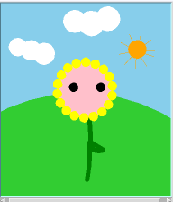
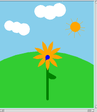
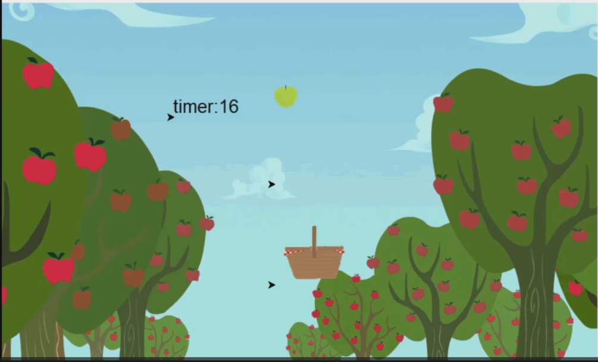
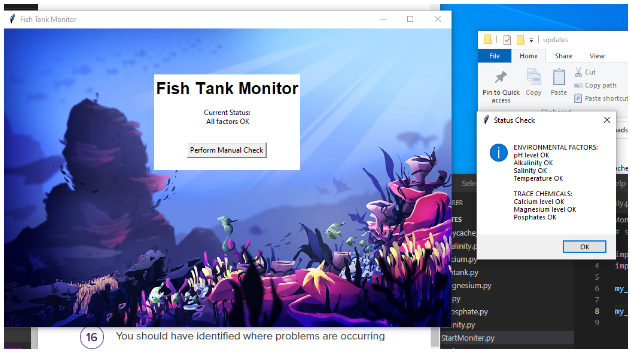
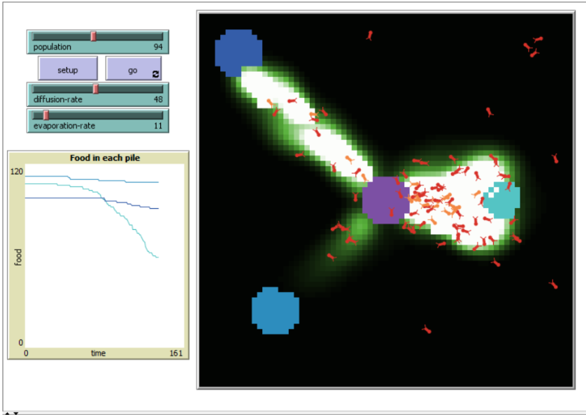
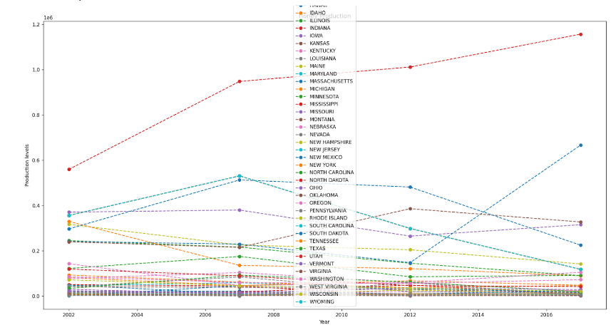

Portfolio Page!
Flower creater (1.1.9)
You can make your own flower with your choices. There are two types of the flowers; sunflower and lotus. You can change the stem, size, color, and add smiley face :)
 Apple sorter (1.2.5)
This is a game you catch apples falling from the tree. Try to get a high score in 30 seconds.
Scratch Project : Revenge of the Cat
The mouse escapes from the chasing cat. Earn points by eating cheese until the cat touches the mouse.

fishtank (2.1.6)
We modified the fishtank code to show "OK" for every criteria.
NetLogo project(4.1.4)
This model simulates how ants act in a colony to forage for food.
Rober Phone Home(3.1.6)
The region we figured out was Desert Plain.
- Lower temperatures that heat up qickly during daytime
- Bright, intense light during daytime
- Constant, chipping and buzzing sounds from alien animals
- Constant einds that varies in regularity
Honey data(3.2.4)
The graph shows the amount of honey for each year for each state of the US
Performance task project
This slot machine gives points only if the alphabets create words in vocabulary lists. If the word matches with the character, you'll earn more points!